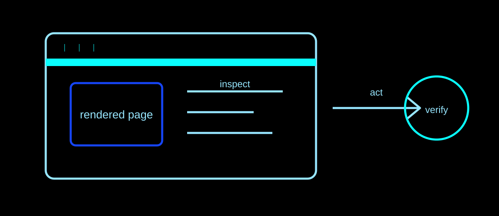

Browser automation
Browser Use: When an AI Agent Needs a Real Browser
Browser Use is an open-source framework for agents that must interact with a live browser: open pages, read rendered pages, and complete multi-step web tasks. It is useful when a public HTTP response is not enough—and wasteful when it is.
Published

Quick definition
Browser Use is a framework for letting an AI agent operate a browser during a task. Its public documentation and repository describe agent-driven browser work through Python and related tooling, rather than a simple one-request HTML fetch.
When a browser earns its cost
Choose browser automation when the page needs JavaScript rendering, a click path, a form state, or inspection of a visual and network context. A public document, API response, or static page usually does not need a browser; a direct HTTP request is faster, easier to reproduce, and exposes less state.
For a research workflow, divide the work into checkpoints: open a public page, capture the relevant result, extract only the permitted fields, then stop. The browser should not become a blanket permission to act as the account holder.
What can go wrong
Selectors change. Consent dialogs interrupt a flow. A page may present a CAPTCHA or require an account. Those are signals to pause, not invitations to defeat safeguards. Treat login, payments, deletes, uploads, and messages as separate permissions with a human in the loop.
Research note
This is a documentation-based explainer, not a claim that this site has tested Browser Use on a particular workflow or account. Check its current quickstart and security guidance before installing it.